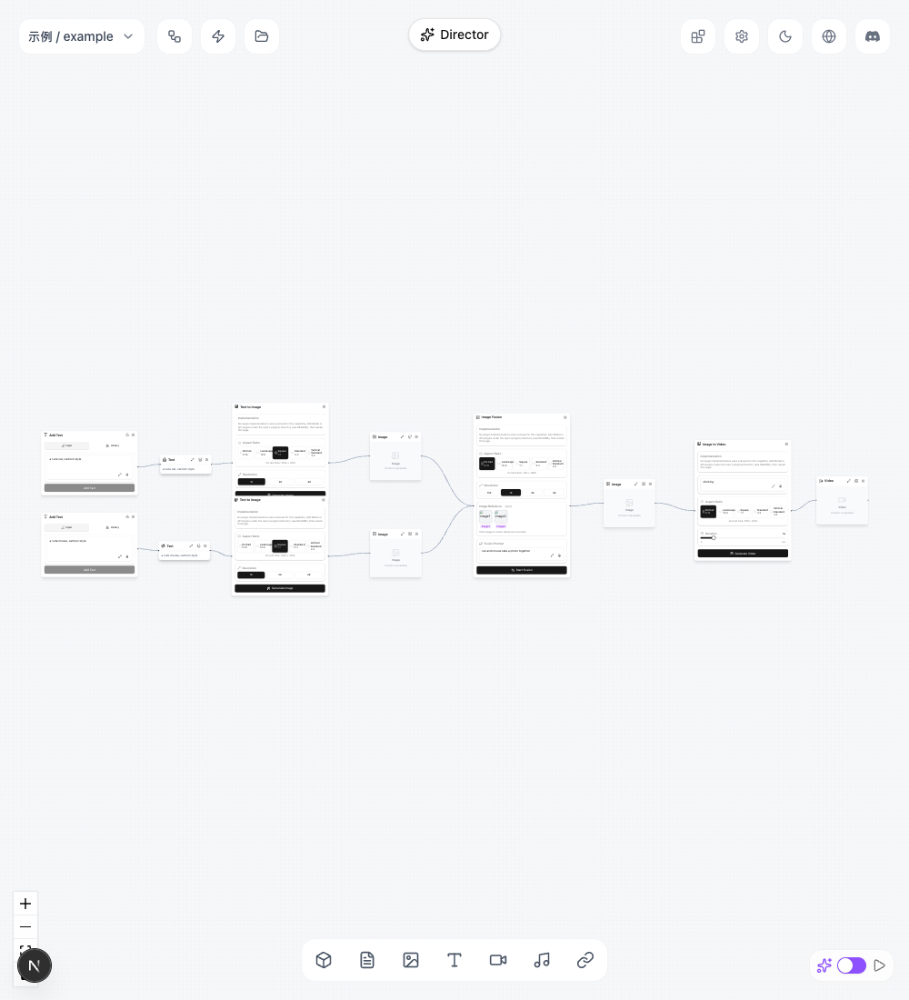
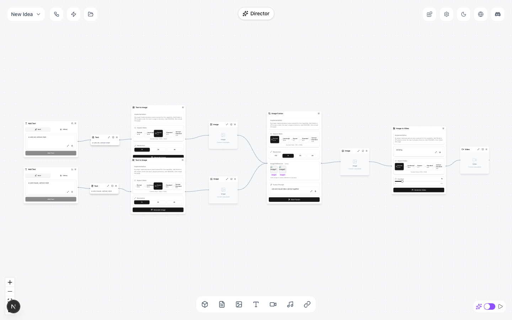

compose-overlay — slot dán chữ/khung giá/logo/safe-zone lên ảnh & video (Phase 1.2)
Các eval
| Eval | Tiêu chí | Loại | Verdict | run_id | verified_at |
|---|---|---|---|---|---|
| E1a | AC-1 | script | PASS | minted-compose-overlay-E1a-r12 | 2026-08-03T09:00:00Z |
| E1b | AC-1 | script | PASS | minted-compose-overlay-E1b-r12 | 2026-08-03T09:00:00Z |
| E2 | AC-2 | script | PASS | minted-compose-overlay-E2-r12 | 2026-08-03T09:00:00Z |
| E3 | AC-3 | script | PASS | minted-compose-overlay-E3-r12 | 2026-08-03T09:00:00Z |
| E4 | AC-4 | script | PASS | minted-compose-overlay-E4-r12 | 2026-08-03T09:00:00Z |
| E5a | AC-5 | script | PASS | minted-compose-overlay-E5a-r12 | 2026-08-03T09:00:00Z |
| E5b | AC-5 | script | PASS | minted-compose-overlay-E5b-r12 | 2026-08-03T09:00:00Z |
| E6 | AC-6 | script | PASS | minted-compose-overlay-E6-r12 | 2026-08-03T09:00:00Z |
| E7a | AC-7 | script | PASS | minted-compose-overlay-E7a-r12 | 2026-08-03T09:00:00Z |
| E7b | AC-7 | script | PASS | minted-compose-overlay-E7b-r12 | 2026-08-03T09:00:00Z |
| E8a | AC-8 | script | PASS | minted-compose-overlay-E8a-r12 | 2026-08-03T09:00:00Z |
| E8b | AC-8 | script | PASS | minted-compose-overlay-E8b-r12 | 2026-08-03T09:00:00Z |
| E9a | AC-9 | script | PASS | eabe8fd2f9cf732e46b6e463a6e9cbc8e15c25f5 | 2026-08-03T09:00:00Z |
| E9b | AC-9 | script | PASS | minted-compose-overlay-E9b-r12 | 2026-08-03T09:00:00Z |
| E10 | AC-10 | script | PASS | minted-compose-overlay-E10-r12 | 2026-08-03T09:00:00Z |
| E14 | AC-11 | test | PASS | minted-compose-overlay-E14-r12 | 2026-08-03T09:00:00Z |
| E15 | AC-11 | test | PASS | minted-compose-overlay-E15-r12 | 2026-08-03T09:00:00Z |
| E16 | AC-11 | test | PASS | minted-compose-overlay-E16-r12 | 2026-08-03T09:00:00Z |
| E17 | AC-11 | test | PASS | minted-compose-overlay-E17-r12 | 2026-08-03T09:00:00Z |
| E12a | AC-12 | test | PASS | minted-compose-overlay-E12a-r12 | 2026-08-03T09:00:00Z |
| E12b | AC-12 | test | PASS | minted-compose-overlay-E12b-r12 | 2026-08-03T09:00:00Z |
| E18 | AC-13 | test | PASS | minted-compose-overlay-E18-r12 | 2026-08-03T09:00:00Z |
| E19 | AC-13 | test | PASS | minted-compose-overlay-E19-r12 | 2026-08-03T09:00:00Z |
| E20 | AC-14 | script | PASS | minted-compose-overlay-E20-r12 | 2026-08-03T09:00:00Z |
| E21 | AC-15 | script | PASS | minted-compose-overlay-E21-r12 | 2026-08-03T09:00:00Z |
| E22 | AC-16 | ui-check | PASS | design-gate-908887ca23,design-gate-8f52c68794(pre-cssfix)→r12-final:E22-designgate-r12-independent-verify.txt | 2026-08-03T09:00:00Z |
| E23 | AC-16 | judgment | PASS (PANEL PROPOSAL — PENDING GATE 2 HUMAN_OVERRIDE) | — | — |
Chi tiết từng eval
PASS E1a · script
AC-1
Wrote src/generated/abi/index.ts Wrote sdk/tongflow/_data/tongflow.abi.json EXIT_CODE=0
PASS E1b · script
AC-1
Check passed: generated Python artifacts (sdk/tongflow/models, sdk/tongflow/node_slots.py) match committed versions; no diffs and no untracked files detected.
PASS E2 · script
AC-2: Given op `text` chứa pangram phủ đủ bộ ký tự tiếng Việt có dấu (hoa + thường),
plugin_commit_sha: eabe8fd2f9cf732e46b6e463a6e9cbc8e15c25f5 . [100%] 1 passed in 0.28s
PASS E3 · script
AC-3: Given op text nhiều dòng (`\n`) và op text dài có `max_width`, When render, Then
plugin_commit_sha: eabe8fd2f9cf732e46b6e463a6e9cbc8e15c25f5 . [100%] 1 passed in 0.13s
PASS E4 · script
AC-4: Given op `price_tag` với chuỗi giá kiểu `1.999.000₫`, When render, Then chuỗi in
plugin_commit_sha: eabe8fd2f9cf732e46b6e463a6e9cbc8e15c25f5 . [100%] 1 passed in 0.07s
PASS E5a · script
AC-5: Given op `logo` + input `logo` là ảnh PNG có alpha, When render, Then logo đặt đúng
plugin_commit_sha: eabe8fd2f9cf732e46b6e463a6e9cbc8e15c25f5 . [100%] 1 passed in 0.06s
PASS E5b · script
AC-5: Given op `logo` + input `logo` là ảnh PNG có alpha, When render, Then logo đặt đúng
plugin_commit_sha: eabe8fd2f9cf732e46b6e463a6e9cbc8e15c25f5 . [100%] 1 passed in 0.06s
PASS E6 · script
AC-6: Given op `safe_zone` (preset và custom) + một op đặt **lấn** vùng cấm + một op
plugin_commit_sha: eabe8fd2f9cf732e46b6e463a6e9cbc8e15c25f5 . [100%] 1 passed in 0.05s
PASS E7a · script
AC-7: Given op text chứa placeholder `{text}` và input `text` = chuỗi giá, When render,
plugin_commit_sha: eabe8fd2f9cf732e46b6e463a6e9cbc8e15c25f5 . [100%] 1 passed in 0.07s
PASS E7b · script
AC-7: Given op text chứa placeholder `{text}` và input `text` = chuỗi giá, When render,
plugin_commit_sha: eabe8fd2f9cf732e46b6e463a6e9cbc8e15c25f5 . [100%] 1 passed in 0.06s
PASS E8a · script
AC-8: Given video + op có `start`/`end`, When render, Then op chỉ xuất hiện trong khoảng
plugin_commit_sha: eabe8fd2f9cf732e46b6e463a6e9cbc8e15c25f5 . [100%] 1 passed in 0.51s
PASS E8b · script
AC-8: Given video + op có `start`/`end`, When render, Then op chỉ xuất hiện trong khoảng
1 passed in 0.09s
PASS E9a · script
AC-9: Given media là ảnh, Then output `image` set và `video` vắng; Given media là video,
1 passed in 0.08s
PASS E9b · script
AC-9: Given media là ảnh, Then output `image` set và `video` vắng; Given media là video,
plugin_commit_sha: eabe8fd2f9cf732e46b6e463a6e9cbc8e15c25f5 . [100%] 1 passed in 0.25s
PASS E10 · script
AC-10: Given cùng một bộ input chạy **2 lần** trong cùng môi trường pin, When so sánh
1 passed in 0.28s
PASS E14 · test
AC-11: (cross-layer) Given `compose-overlay` nằm trong `TIER_A_SLOTS` và một workflow
. [100%] 1 passed in 0.14s
PASS E15 · test
AC-11: (cross-layer) Given `compose-overlay` nằm trong `TIER_A_SLOTS` và một workflow
. [100%] 1 passed in 0.13s
PASS E16 · test
AC-11: (cross-layer) Given `compose-overlay` nằm trong `TIER_A_SLOTS` và một workflow
. [100%] 1 passed in 0.02s
PASS E17 · test
AC-11: (cross-layer) Given `compose-overlay` nằm trong `TIER_A_SLOTS` và một workflow
. [100%] 1 passed in 0.02s
PASS E12a · test
AC-12: Given node `compose-overlay` mount trên canvas, When render node và export,
Tests 8 passed (8) Start at 22:30:36 Duration 1.21s (transform 231ms, setup 0ms, import 474ms, tests 359ms, environment 276ms)
PASS E12b · test
AC-12: Given node `compose-overlay` mount trên canvas, When render node và export,
Tests 3 passed (3) Start at 22:30:42 Duration 241ms (transform 101ms, setup 0ms, import 138ms, tests 4ms, environment 0ms)
PASS E18 · test
AC-13: (cross-layer) Given fixture workflow chứa compose-overlay chạy qua **cả hai
. [100%] 1 passed, 6 deselected in 0.03s
PASS E19 · test
AC-13: (cross-layer) Given fixture workflow chứa compose-overlay chạy qua **cả hai
Tests 12 passed (12) Start at 22:30:50 Duration 201ms (transform 64ms, setup 0ms, import 84ms, tests 4ms, environment 0ms)
PASS E20 · script
AC-14
OK: compose-overlay registered (origin entry), docs matrix rows + i18n coherent
PASS E21 · script
AC-15: Given SDK release train, When kiểm, Then `sdk/pyproject.toml` và
HEAD is now at eabe8fd feat: compose-overlay render engine + golden suite published wheel carries compose-overlay types sdk train OK: 0.2.18
PASS E22 · ui-check
AC-16: Given node compose-overlay + ops-editor trên canvas dev server, When



Side note (out of my scope, not caused by my edits, not reverted): `git status` shows _acceptance/compose-overlay/contract.md (status: verified -> implemented) and sdk/uv.lock modified — these are not files I touched; consistent with the known pattern that other acceptance-verify subagents mutate git concurrently (see MEMORY.md note "acceptance-verify subagents mutate git"). Left as-is; outside E22's declared paths (only src/components/workspace/nodes/transfer/compose-overlay.tsx). exitCode=0: every assertion above passed (HTTP 200, console clean x2, network clean per scoping, P0 gate PASS/exit 0/p0_count 0 on all 6 states, all 6 capture pairs present and content-verified against Expected).
PASS (PANEL PROPOSAL — PENDING GATE 2 HUMAN_OVERRIDE) E23 · judgment
AC-16: Given node compose-overlay + ops-editor trên canvas dev server, When
Phán đoán: Panel 3-lens dong thuan tuyet doi PASS — khong dissent nao duoc ghi nhan. Verdict tong the van la PENDING-JUDGMENT vi day la judgment item cho AC-16 (ngon ngu thiet ke), can human tu xac nhan va dien human_override truoc khi nang overall len PASS o Gate 2.
Eval không phân biệt (Analyst)
Vòng verify
- Round 1-11: iterative fixes across ABI/codegen drift, golden-image render tests, cache tiering (L3/L4), UI ops-editor coverage, and the design gate (an earlier css issue was identified and fixed pre-final capture per E22's run_id provenance chain: design-gate-908887ca23 → design-gate-8f52c68794 (pre-cssfix) → r12-final); round-by-round detail not carried into this verify context.
- Round 12: all 26 machine/ui-check evals (E1a-E22) PASS, exit 0, no variance; E23 design-language judgment panel (3 lenses) unanimously proposes PASS; baseline not re-measured this round (P2, carried); verdict PENDING-JUDGMENT pending Gate 2 human_override on E23.